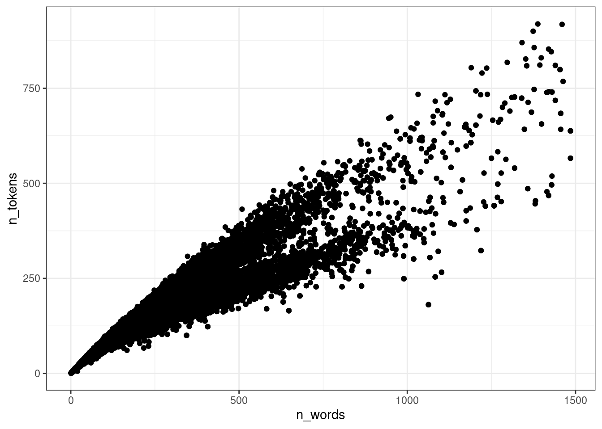
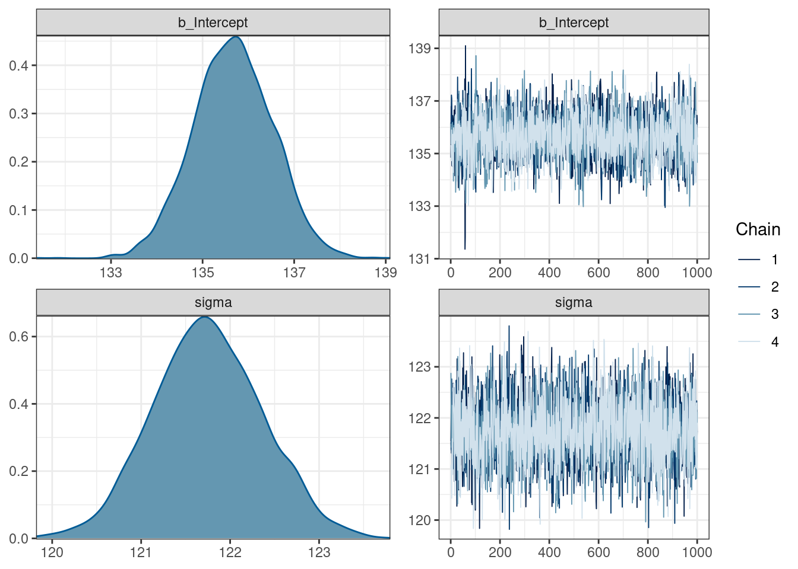

11 Байесовский регрессионный анализ
library(tidyverse)11.1 Основы регрессионного анализа

Когда мы используем регрессионный анализ, мы пытаемся оценить два параметра:
- свободный член (intercept) – значение \(y\) при \(x = 0\);
- угловой коэффициент (slope) – изменение \(y\) при изменении \(x\) на одну единицу.
\[y_i = \beta_0 + \beta_1\times x_i + \epsilon_i\]
Причем, иногда мы можем один или другой параметр считать равным нулю.
При этом, вне зависимости от статистической школы, у регрессии есть свои ограничения на применение:
- линейность связи между \(x\) и \(y\);
- нормальность распределение остатков \(\epsilon_i\);
- гомоскидастичность — равномерность распределения остатков на всем протяжении \(x\);
- независимость переменных;
- независимость наблюдений друг от друга.
11.2 brms
Для анализа возьмем датасет, который я составил из UD-корпусов и попробуем смоделировать связь между количеством слов в тексте и количеством уникальных слов (закон Хердана-Хипса).
ud <- read_csv("https://raw.githubusercontent.com/agricolamz/udpipe_count_n_words_and_tokens/master/filtered_dataset.csv")
glimpse(ud)Rows: 20,705
Columns: 5
$ doc_id <chr> "KR1d0052_001", "KR1d0052_002", "KR1d0052_003", "KR1d0052_…
$ n_words <dbl> 3516, 2131, 4927, 4884, 4245, 5027, 3406, 2202, 2673, 2300…
$ n_tokens <dbl> 842, 546, 869, 883, 737, 1085, 494, 443, 573, 578, 660, 87…
$ language <chr> "Classical_Chinese", "Classical_Chinese", "Classical_Chine…
$ corpus_code <chr> "Kyoto", "Kyoto", "Kyoto", "Kyoto", "Kyoto", "Kyoto", "Kyo…Для начала, нарушим кучу ограничений на применение регрессии и смоделируем модель для вот таких вот данных, взяв только тексты меньше 1500 слов:
ud %>%
filter(n_words < 1500) ->
ud
ud %>%
ggplot(aes(n_words, n_tokens))+
geom_point()
11.2.1 Модель только со свободным членом
library(brms)
get_prior(n_tokens ~ 1,
family = "normal",
data = ud)Вот модель с встроенными априорными распределениями:
fit_intercept <- brm(n_tokens ~ 1,
family = "normal",
data = ud,
silent = TRUE)Running /usr/lib/R/bin/R CMD SHLIB foo.c
gcc -std=gnu99 -std=gnu11 -I"/usr/share/R/include" -DNDEBUG -I"/home/agricolamz/R/x86_64-pc-linux-gnu-library/4.1/Rcpp/include/" -I"/home/agricolamz/R/x86_64-pc-linux-gnu-library/4.1/RcppEigen/include/" -I"/home/agricolamz/R/x86_64-pc-linux-gnu-library/4.1/RcppEigen/include/unsupported" -I"/home/agricolamz/R/x86_64-pc-linux-gnu-library/4.1/BH/include" -I"/home/agricolamz/R/x86_64-pc-linux-gnu-library/4.1/StanHeaders/include/src/" -I"/home/agricolamz/R/x86_64-pc-linux-gnu-library/4.1/StanHeaders/include/" -I"/home/agricolamz/R/x86_64-pc-linux-gnu-library/4.1/RcppParallel/include/" -I"/home/agricolamz/R/x86_64-pc-linux-gnu-library/4.1/rstan/include" -DEIGEN_NO_DEBUG -DBOOST_DISABLE_ASSERTS -DBOOST_PENDING_INTEGER_LOG2_HPP -DSTAN_THREADS -DBOOST_NO_AUTO_PTR -include '/home/agricolamz/R/x86_64-pc-linux-gnu-library/4.1/StanHeaders/include/stan/math/prim/mat/fun/Eigen.hpp' -D_REENTRANT -DRCPP_PARALLEL_USE_TBB=1 -fpic -g -O2 -fdebug-prefix-map=/build/r-base-i2PIHO/r-base-4.1.2=. -fstack-protector-strong -Wformat -Werror=format-security -Wdate-time -D_FORTIFY_SOURCE=2 -g -c foo.c -o foo.o
In file included from /home/agricolamz/R/x86_64-pc-linux-gnu-library/4.1/RcppEigen/include/Eigen/Core:88,
from /home/agricolamz/R/x86_64-pc-linux-gnu-library/4.1/RcppEigen/include/Eigen/Dense:1,
from /home/agricolamz/R/x86_64-pc-linux-gnu-library/4.1/StanHeaders/include/stan/math/prim/mat/fun/Eigen.hpp:13,
from <command-line>:
/home/agricolamz/R/x86_64-pc-linux-gnu-library/4.1/RcppEigen/include/Eigen/src/Core/util/Macros.h:628:1: error: unknown type name ‘namespace’
628 | namespace Eigen {
| ^~~~~~~~~
/home/agricolamz/R/x86_64-pc-linux-gnu-library/4.1/RcppEigen/include/Eigen/src/Core/util/Macros.h:628:17: error: expected ‘=’, ‘,’, ‘;’, ‘asm’ or ‘__attribute__’ before ‘{’ token
628 | namespace Eigen {
| ^
In file included from /home/agricolamz/R/x86_64-pc-linux-gnu-library/4.1/RcppEigen/include/Eigen/Dense:1,
from /home/agricolamz/R/x86_64-pc-linux-gnu-library/4.1/StanHeaders/include/stan/math/prim/mat/fun/Eigen.hpp:13,
from <command-line>:
/home/agricolamz/R/x86_64-pc-linux-gnu-library/4.1/RcppEigen/include/Eigen/Core:96:10: fatal error: complex: No such file or directory
96 | #include <complex>
| ^~~~~~~~~
compilation terminated.
make: *** [/usr/lib/R/etc/Makeconf:168: foo.o] Error 1
SAMPLING FOR MODEL '65fac4710f6791442452f18e53c1ca6b' NOW (CHAIN 1).
Chain 1:
Chain 1: Gradient evaluation took 0.000468 seconds
Chain 1: 1000 transitions using 10 leapfrog steps per transition would take 4.68 seconds.
Chain 1: Adjust your expectations accordingly!
Chain 1:
Chain 1:
Chain 1: Iteration: 1 / 2000 [ 0%] (Warmup)
Chain 1: Iteration: 200 / 2000 [ 10%] (Warmup)
Chain 1: Iteration: 400 / 2000 [ 20%] (Warmup)
Chain 1: Iteration: 600 / 2000 [ 30%] (Warmup)
Chain 1: Iteration: 800 / 2000 [ 40%] (Warmup)
Chain 1: Iteration: 1000 / 2000 [ 50%] (Warmup)
Chain 1: Iteration: 1001 / 2000 [ 50%] (Sampling)
Chain 1: Iteration: 1200 / 2000 [ 60%] (Sampling)
Chain 1: Iteration: 1400 / 2000 [ 70%] (Sampling)
Chain 1: Iteration: 1600 / 2000 [ 80%] (Sampling)
Chain 1: Iteration: 1800 / 2000 [ 90%] (Sampling)
Chain 1: Iteration: 2000 / 2000 [100%] (Sampling)
Chain 1:
Chain 1: Elapsed Time: 1.45252 seconds (Warm-up)
Chain 1: 1.0172 seconds (Sampling)
Chain 1: 2.46972 seconds (Total)
Chain 1:
SAMPLING FOR MODEL '65fac4710f6791442452f18e53c1ca6b' NOW (CHAIN 2).
Chain 2:
Chain 2: Gradient evaluation took 0.000247 seconds
Chain 2: 1000 transitions using 10 leapfrog steps per transition would take 2.47 seconds.
Chain 2: Adjust your expectations accordingly!
Chain 2:
Chain 2:
Chain 2: Iteration: 1 / 2000 [ 0%] (Warmup)
Chain 2: Iteration: 200 / 2000 [ 10%] (Warmup)
Chain 2: Iteration: 400 / 2000 [ 20%] (Warmup)
Chain 2: Iteration: 600 / 2000 [ 30%] (Warmup)
Chain 2: Iteration: 800 / 2000 [ 40%] (Warmup)
Chain 2: Iteration: 1000 / 2000 [ 50%] (Warmup)
Chain 2: Iteration: 1001 / 2000 [ 50%] (Sampling)
Chain 2: Iteration: 1200 / 2000 [ 60%] (Sampling)
Chain 2: Iteration: 1400 / 2000 [ 70%] (Sampling)
Chain 2: Iteration: 1600 / 2000 [ 80%] (Sampling)
Chain 2: Iteration: 1800 / 2000 [ 90%] (Sampling)
Chain 2: Iteration: 2000 / 2000 [100%] (Sampling)
Chain 2:
Chain 2: Elapsed Time: 1.54891 seconds (Warm-up)
Chain 2: 1.26192 seconds (Sampling)
Chain 2: 2.81083 seconds (Total)
Chain 2:
SAMPLING FOR MODEL '65fac4710f6791442452f18e53c1ca6b' NOW (CHAIN 3).
Chain 3:
Chain 3: Gradient evaluation took 0.000229 seconds
Chain 3: 1000 transitions using 10 leapfrog steps per transition would take 2.29 seconds.
Chain 3: Adjust your expectations accordingly!
Chain 3:
Chain 3:
Chain 3: Iteration: 1 / 2000 [ 0%] (Warmup)
Chain 3: Iteration: 200 / 2000 [ 10%] (Warmup)
Chain 3: Iteration: 400 / 2000 [ 20%] (Warmup)
Chain 3: Iteration: 600 / 2000 [ 30%] (Warmup)
Chain 3: Iteration: 800 / 2000 [ 40%] (Warmup)
Chain 3: Iteration: 1000 / 2000 [ 50%] (Warmup)
Chain 3: Iteration: 1001 / 2000 [ 50%] (Sampling)
Chain 3: Iteration: 1200 / 2000 [ 60%] (Sampling)
Chain 3: Iteration: 1400 / 2000 [ 70%] (Sampling)
Chain 3: Iteration: 1600 / 2000 [ 80%] (Sampling)
Chain 3: Iteration: 1800 / 2000 [ 90%] (Sampling)
Chain 3: Iteration: 2000 / 2000 [100%] (Sampling)
Chain 3:
Chain 3: Elapsed Time: 1.33042 seconds (Warm-up)
Chain 3: 1.05446 seconds (Sampling)
Chain 3: 2.38488 seconds (Total)
Chain 3:
SAMPLING FOR MODEL '65fac4710f6791442452f18e53c1ca6b' NOW (CHAIN 4).
Chain 4:
Chain 4: Gradient evaluation took 0.000238 seconds
Chain 4: 1000 transitions using 10 leapfrog steps per transition would take 2.38 seconds.
Chain 4: Adjust your expectations accordingly!
Chain 4:
Chain 4:
Chain 4: Iteration: 1 / 2000 [ 0%] (Warmup)
Chain 4: Iteration: 200 / 2000 [ 10%] (Warmup)
Chain 4: Iteration: 400 / 2000 [ 20%] (Warmup)
Chain 4: Iteration: 600 / 2000 [ 30%] (Warmup)
Chain 4: Iteration: 800 / 2000 [ 40%] (Warmup)
Chain 4: Iteration: 1000 / 2000 [ 50%] (Warmup)
Chain 4: Iteration: 1001 / 2000 [ 50%] (Sampling)
Chain 4: Iteration: 1200 / 2000 [ 60%] (Sampling)
Chain 4: Iteration: 1400 / 2000 [ 70%] (Sampling)
Chain 4: Iteration: 1600 / 2000 [ 80%] (Sampling)
Chain 4: Iteration: 1800 / 2000 [ 90%] (Sampling)
Chain 4: Iteration: 2000 / 2000 [100%] (Sampling)
Chain 4:
Chain 4: Elapsed Time: 1.27846 seconds (Warm-up)
Chain 4: 1.32895 seconds (Sampling)
Chain 4: 2.60741 seconds (Total)
Chain 4: При желании встроенные априорные расспеределения можно не использовать и вставлять в аргумент prior априорные распределения по вашему желанию.
fit_intercept Family: gaussian
Links: mu = identity; sigma = identity
Formula: n_tokens ~ 1
Data: ud (Number of observations: 20282)
Draws: 4 chains, each with iter = 2000; warmup = 1000; thin = 1;
total post-warmup draws = 4000
Population-Level Effects:
Estimate Est.Error l-95% CI u-95% CI Rhat Bulk_ESS Tail_ESS
Intercept 135.67 0.86 134.00 137.34 1.00 2768 2609
Family Specific Parameters:
Estimate Est.Error l-95% CI u-95% CI Rhat Bulk_ESS Tail_ESS
sigma 121.75 0.61 120.59 122.94 1.00 3780 3139
Draws were sampled using sampling(NUTS). For each parameter, Bulk_ESS
and Tail_ESS are effective sample size measures, and Rhat is the potential
scale reduction factor on split chains (at convergence, Rhat = 1).plot(fit_intercept)
Давайте посмотрим на наши данные:

Оригинал мема. Вот еще один.
{kind=link}